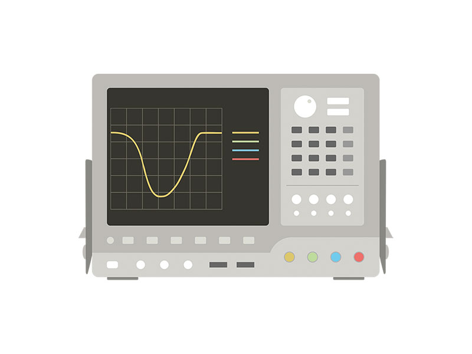
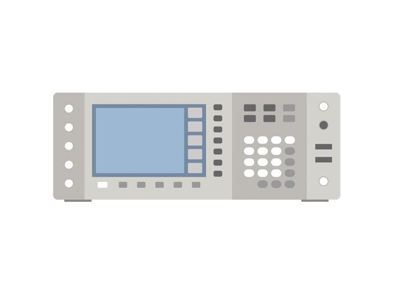
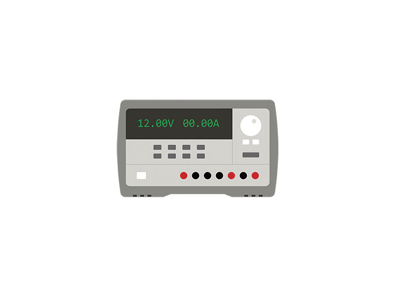
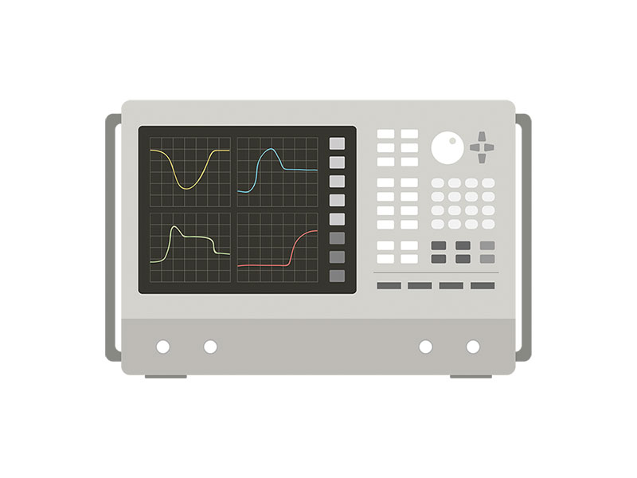

Illustration - Measurement Instruments
ObjectiveHighly accurate measurement Instruments are not something we see on a daily basis.
Designed for Web / Digital Content
Made with IllustratorPhotoshop
Works

The Oscilloscope

The Power Analyzer

The Power Supply

The Network Analyzer